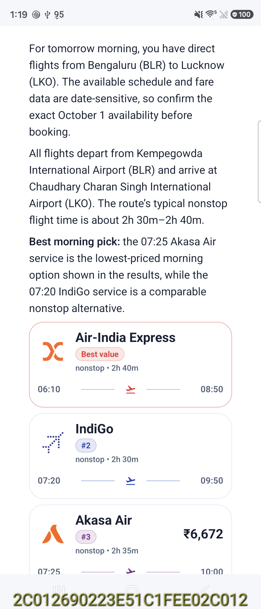
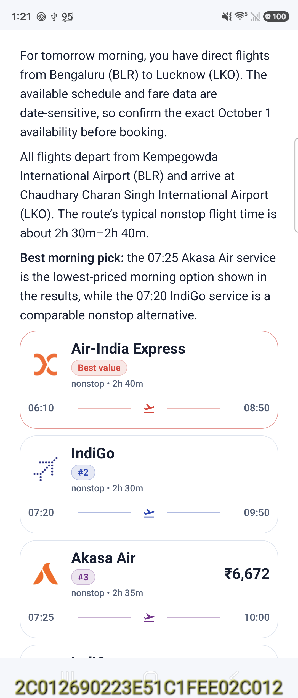
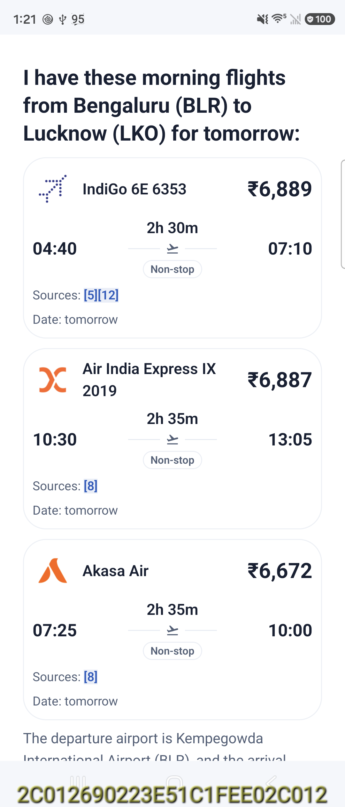

Exact saved Bixby answers replayed on Flip8 in a separate QA app. Left: SDK 0.5.6. Right: SDK 0.5.7. No model inference and no edits to the saved Express or A2UI. Bixby must be rebuilt with the updated AAR.
Text and card width: 840 → 936 pixels. The extra 16 dp inset on each side is gone; the host's 24 dp gutter remains. Flight-card internal padding is 10 dp.


All three rows now use dedicated flight cards, with separate times, duration, fare, source previews and the supplied date.

Validation details and test limitation · Verified source popup · Hashes and measurements